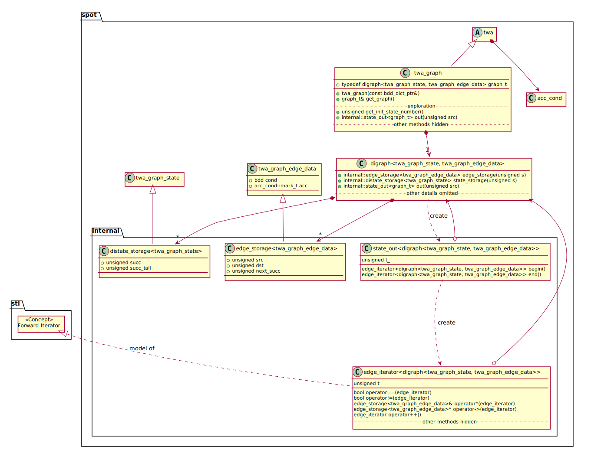
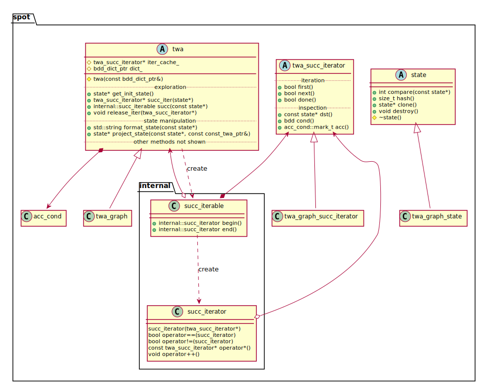

Explicit vs. on-the-fly: two interfaces for exploring automata
Table of Contents
When exploring automata (i.e., following its transition structure), there are two different interfaces that can be used:
- the on-the-fly
twainterface, and - the explicit
twa_graphinterface.
To demonstrate the difference between the two interfaces, we will write an small depth-first search that prints all states accessible from the initial state of an automaton.
The explicit interface
The explicit interface can only be used on twa_graph objects. In
this interface, states and edges are referred to by numbers that are
indices into state and edge vectors. This interface is lightweight,
and is the preferred interface for writing most automata algorithms in
Spot.
How this interface works
The picture below gives a partial view of the classes involved:

An ω-automaton can be defined as a labeled directed graph, plus an
initial state and an acceptance condition. The twa_graph of Spot
stores exactly these three components: the transition structure is
stored as an instance of digraph (directed graph), the initial state
is just a number, and the acceptance condition is an instance of
acc_cond which is actually inherited from the twa parent. You can
ignore the twa inheritance for now, we will discuss it when we talk
about the on-the-fly interface in the next section.
In this section we are discussing the "explicit interface", which is a way of exploring the stored graph directly.
The digraph template class in Spot is parameterized by classes
representing additional data to store on state, and on edges. In the
case of a twa_graph, these extra data are implemented as
twa_graph_state (but we won't be concerned about this type) and
twa_graph_edge_data. The class twa_graph_edge_data has two
fields: cond is a BDD representing the label of the edge, and
acc represents the acceptance sets to which the edge belong.
The digraph stores a vector of states, and a vector of edges, but
both states and edges need to be equipped with field necessary to
represent the graph structure. In particular, a state holds two edges
numbers representing the first (succ) and last (succ_tail) edges
exiting the state (that "last edge" is only useful to append new
transitions, it is not used for iteration), and each edge has three
additional fields: src (the source state), dst (the destination
state), and next_succ (the index of the next edge leaving src, in
the edge vector). By way of template inheritance, these
digraph-fields are combined with the twa_graph specific fields, so
that all edges can be represented by an instance of
std::vector<internal::edge_storage<twa_graph_edges_data>>: each
element of this vector acts as a structure with 5 fields; likewise for
the state vector.
Calling get_init_state_number() will return a state number which is
just an index into the state vector of the underlying graph.
From a state number s, it is possible to iterate over all successors
by doing a for loop on out(s), as in:
#include <iostream> #include <spot/twa/twagraph.hh> #include <spot/tl/parse.hh> #include <spot/twaalgos/translate.hh> void example(spot::const_twa_graph_ptr aut) { unsigned s = aut->get_init_state_number(); for (auto& e: aut->out(s)) std::cout << e.src << "->" << e.dst << '\n'; } int main() { // Create a small example automaton spot::parsed_formula pf = spot::parse_infix_psl("FGa | FGb"); if (pf.format_errors(std::cerr)) return 1; example(spot::translator().run(pf.f)); }
0->0 0->1 0->2
In the above lines, aut->out(s) delegates to
aut->get_graphs().out(s) and returns a state_out<graph_t>
instance, which is a small temporary object masquerading as an STL
container with begin() and end() methods. The ranged-for loop
syntax of C++ works exactly as if we had typed
// You could write this, but why not let the compiler do it for you? // In any case, do not spell out the types of tmp and i, as those // should be considered internal details. void example(spot::const_twa_graph_ptr aut) { unsigned s = aut->get_init_state_number(); auto tmp = aut->get_graph().out(s); for (auto i = tmp.begin(), end = tmp.end(); i != end; ++i) std::cout << i->src << "->" << i->dst << '\n'; }
In the above example() function, the iterators i and end are
instances of the internal::edge_iterator<spot::twa_graph::graph_t>
class, which redefines enough operators to act like an STL Foward
Iterator over all outgoing edges of s. Note that the tmp and i
objects hold a pointer to the graph, but it does not really matter
because the compiler will optimize this away.
In fact after operators are inlined and useless temporary variables removed, the above loop compiles to something equivalent to this:
// You could also write this lower-level version, and that sometimes // helps (e.g., if you want to pause the loop and then resume it, as // we will do later). void example(spot::const_twa_graph_ptr aut) { unsigned s = aut->get_init_state_number(); auto& g = aut->get_graph(); unsigned b = g.state_storage(s).succ; // first edge of state s while (b) { auto& e = g.edge_storage(b); std::cout << e.src << "->" << e.dst << '\n'; b = e.next_succ; } }
Note that next_succ==0 marks the last edge in a successor group;
this is why edge numbers start at 1.
Despite the various levels of abstractions, these three loops compile to exactly the same machine code.
Recursive DFS
Let us write a DFS using this interface. A recursive version is easy:
we call dfs_rec() from the initial state, that function updates a
vector of visited states in order to not visit them twice, and recurse
on all successors of the given state.
#include <iostream> #include <spot/twa/twagraph.hh> #include <spot/tl/parse.hh> #include <spot/twaalgos/translate.hh> void dfs_rec(spot::const_twa_graph_ptr aut, unsigned state, std::vector<bool>& seen) { seen[state] = true; for (auto& e: aut->out(state)) { std::cout << e.src << "->" << e.dst << '\n'; if (!seen[e.dst]) dfs_rec(aut, e.dst, seen); } } void dfs(spot::const_twa_graph_ptr aut) { std::vector<bool> seen(aut->num_states()); dfs_rec(aut, aut->get_init_state_number(), seen); } int main() { // Create a small example automaton spot::parsed_formula pf = spot::parse_infix_psl("FGa | FGb"); if (pf.format_errors(std::cerr)) return 1; dfs(spot::translator().run(pf.f)); }
0->0 0->1 1->1 0->2 2->2
Iterative DFS (two versions)
Recursive graph algorithms are usually avoided, especially if large graphs should be processed.
By maintaining a stack of states to process, we can visit all accessible transitions in a "DFS-ish" way, but without producing exactly the same output as above.
#include <iostream> #include <stack> #include <spot/twa/twagraph.hh> #include <spot/tl/parse.hh> #include <spot/twaalgos/translate.hh> void almost_dfs(spot::const_twa_graph_ptr aut) { std::vector<bool> seen(aut->num_states()); std::stack<unsigned> todo; auto push_state = [&](unsigned state) { todo.push(state); seen[state] = true; }; push_state(aut->get_init_state_number()); while (!todo.empty()) { unsigned s = todo.top(); todo.pop(); for (auto& e: aut->out(s)) { std::cout << e.src << "->" << e.dst << '\n'; if (!seen[e.dst]) push_state(e.dst); } } } int main() { // Create a small example automaton spot::parsed_formula pf = spot::parse_infix_psl("FGa | FGb"); if (pf.format_errors(std::cerr)) return 1; almost_dfs(spot::translator().run(pf.f)); }
0->0 0->1 0->2 2->2 1->1
So this still prints all accessible edges, but not in the same order as our recursive DFS. This is because this version prints all the outgoing edges of one state before processing the successors.
For many algorithms, this different ordering makes no difference, and this order should even be preferred: groups of transitions leaving the same state are usually stored consecutively in memory, so they are better processed in chain, rather than trying to follow exactly the order we would get from a recursive DFS, which will jump at random places in the edge vector.
In fact writing the iterative equivalent of the recursive dfs() is
a bit challenging if we do not want to be wasteful. Clearly, we
can no longer use the ranged-for loop, because we need to process
one edge, save the current iterator on a stack to process the
successor, and finally advance the iterator once we pop back to it.
Given the above data structure, it is tempting to use a
std::stack<spot::internal::edge_iterator<spot::twa_graph::graph_t>>,
but that is a bad idea. Remember that those internal::edge_iterator
are meant to be short-lived temporary objects, and they all store a
pointer to graph. We do not want to store multiple copies of this
pointer on our stack. Besides, you do not want to ever write
spot::internal in your code.
So a better implementation (better than the
std::stack<spot::internal::edge_iterator<...>> suggestion) would be
to maintain a stack of edge numbers. Indeed, each edge
stores the number of the next edge leaving the same source
state, so this is enough to remember where we are.
#include <iostream> #include <stack> #include <spot/twa/twagraph.hh> #include <spot/tl/parse.hh> #include <spot/twaalgos/translate.hh> void dfs(spot::const_twa_graph_ptr aut) { std::vector<bool> seen(aut->num_states()); std::stack<unsigned> todo; // Now storing edges numbers auto& gr = aut->get_graph(); auto push_state = [&](unsigned state) { todo.push(gr.state_storage(state).succ); seen[state] = true; }; push_state(aut->get_init_state_number()); while (!todo.empty()) { unsigned edge = todo.top(); todo.pop(); if (edge == 0U) // No more outgoing edge continue; auto& e = gr.edge_storage(edge); todo.push(e.next_succ); // Prepare next sibling edge. if (!seen[e.dst]) push_state(e.dst); std::cout << e.src << "->" << e.dst << '\n'; } } int main() { // Create a small example automaton spot::parsed_formula pf = spot::parse_infix_psl("FGa | FGb"); if (pf.format_errors(std::cerr)) return 1; dfs(spot::translator().run(pf.f)); }
0->0 0->1 1->1 0->2 2->2
This version is functionally equivalent to the recursive one, but its
implementation requires more knowledge of the graph data structure
than both the recursive and the almost_dfs() version.
The on-the-fly twa interface
The twa class defines an abstract interface suitable for on-the-fly
exploration of an automaton. Subclasses of twa need not represent
the entire automaton in memory; if they prefer, they can compute it as
it is explored.
Naturally twa_graph, even if it stores the automaton graph
explicitly, is a subclasse of twa, so it also implements the
on-the-fly interface but without computing anything.
How this interface works
The following class diagram has two classes in common with the
previous one: twa and twa_graph, but this time the focus is on the
abstract interface defined in twa, not in the explicit interface
defined in twa_graph.

To explore a twa, one would first call twa::get_init_state(),
which returns a pointer to a state. Then, calling
twa::succ_iter() on this state will return a twa_succ_iterator
that allows iterating over all successors.
Different subclasses of twa will instantiate different subclasses of
state and twa_succ_iterator . In the case of twa_graph, the
subclasses used are twa_graph_succ_iterator and twa_graph_state,
but you can ignore that until you have to write your own twa
subclass.
The interface puts few requirement on memory management: we want to be
able to write automata that can forget about their states (and
recompute them), so there is no guarantee that reaching the same state
twice will return the same pointer twice. Even calling
get_init_state() twice could return two different pointers. The
only way to decide whether two state* s1 and s2 represent the
same state is to check that s1->compare(s2) == 0.
As far as memory management goes, there are roughly two types of twa
subclasses: those that always create new state instances, and those
that reuse state instances (either because they have a cache, or
because, as in the case of twa_graph, they know the entire graph).
From the user's perspective, state should never be passed to
delete (their protected destructor will prevent that). Instead, we
should call state::destroy(). Doing so allows each subclass to
override the default behavior of destroy() (which is to call
delete). States can be cloned using the state::clone() method, in
which case each copy has to be destroyed.
twa_succ_iterator instances are allocated and should be deleted once
done, but to save some work, they can also be returned to the
automaton with twa::release_iter. By default, this method stores the
last iterator received to recycle it in the next call to succ_iter(),
saving a delete and new pair.
To summarize, here is a crude loop over the successors of the initial state:
#include <iostream> #include <spot/twa/twa.hh> #include <spot/tl/parse.hh> #include <spot/twaalgos/translate.hh> void example(spot::const_twa_ptr aut) { const spot::state* s = aut->get_init_state(); spot::twa_succ_iterator* i = aut->succ_iter(s); for (i->first(); !i->done(); i->next()) { const spot::state* dst = i->dst(); std::cout << aut->format_state(s) << "->" << aut->format_state(dst) << '\n'; dst->destroy(); } aut->release_iter(i); // "delete i;" is OK too, but inferior s->destroy(); } int main() { // Create a small example automaton spot::parsed_formula pf = spot::parse_infix_psl("FGa | FGb"); if (pf.format_errors(std::cerr)) return 1; example(spot::translator().run(pf.f)); }
0->0 0->1 0->2
Notice that a twa_succ_iterator allows iterating over outgoing
edges, but only offers access to dst(), acc(), and cond() for
this edge. The source state is not available from the iterator. This
is usually not a problem: since the iterator was created from this
state, it is usually known.
Let us improve the above loop. In the previous example, each of
first(), done(), next() is a virtual method call. So if there
are \(n\) successors, there will be \(1\) call to first(), \(n\) calls to
next(), and \(n+1\) calls to done(), so a total of \(2n+2\) virtual
method calls.
However first() and next() also return a Boolean stating whether
the loop could continue. This allows rewriting the above code as
follows:
void example(spot::const_twa_ptr aut) { const spot::state* s = aut->get_init_state(); spot::twa_succ_iterator* i = aut->succ_iter(s); if (i->first()) do { const spot::state* dst = i->dst(); std::cout << aut->format_state(s) << "->" << aut->format_state(dst) << '\n'; dst->destroy(); } while(i->next()); aut->release_iter(i); s->destroy(); }
Now we have only \(1\) call to first() and \(n\) calls to next(),
so we halved to number of virtual calls.
Using C++11's ranged for loop, this example can be reduced to the
following equivalent code:
#include <iostream> #include <spot/twa/twa.hh> #include <spot/tl/parse.hh> #include <spot/twaalgos/translate.hh> void example(spot::const_twa_ptr aut) { const spot::state* s = aut->get_init_state(); for (auto i: aut->succ(s)) { const spot::state* dst = i->dst(); std::cout << aut->format_state(s) << "->" << aut->format_state(dst) << '\n'; dst->destroy(); } s->destroy(); } int main() { // Create a small example automaton spot::parsed_formula pf = spot::parse_infix_psl("FGa | FGb"); if (pf.format_errors(std::cerr)) return 1; example(spot::translator().run(pf.f)); }
0->0 0->1 0->2
This works in a similar way as out(s) in the explicit interface.
Calling aut->succ(s) creates a fake container
(internal::succ_iterable) with begin() and end() methods that
return STL-like iterators (internal::succ_iterator). Incrementing
the internal::succ_iterator will actually increment the
twa_succ_iterator they hold. Upon completion of the loop, the
temporary internal::succ_iterable is destroyed and its destructor
passes the iterator back to aut->release_iter() for recycling.
Recursive DFS (v1)
We can now write a recursive DFS easily. The only pain is to keep
track of the states to destroy() them only after we do not need them
anymore. This tracking can be done using the data structure we use to
remember what states we have already seen.
#include <iostream> #include <unordered_set> #include <spot/twa/twa.hh> #include <spot/tl/parse.hh> #include <spot/twa/twaproduct.hh> #include <spot/twaalgos/translate.hh> typedef std::unordered_set<const spot::state*, spot::state_ptr_hash, spot::state_ptr_equal> seen_t; void dfs_rec(spot::const_twa_ptr aut, const spot::state* s, seen_t& seen) { if (seen.insert(s).second == false) { s->destroy(); return; } for (auto i: aut->succ(s)) { const spot::state* dst = i->dst(); std::cout << aut->format_state(s) << "->" << aut->format_state(dst) << '\n'; dfs_rec(aut, dst, seen); // Do not destroy dst, as it is either destroyed by dfs_rec() // or stored in seen. } } void dfs(spot::const_twa_ptr aut) { seen_t seen; dfs_rec(aut, aut->get_init_state(), seen); // Do not forget to destroy all states in seen. for (auto s: seen) s->destroy(); } int main() { // Create a small example automaton spot::parsed_formula pf = spot::parse_infix_psl("FGa | FGb"); if (pf.format_errors(std::cerr)) return 1; dfs(spot::translator().run(pf.f)); }
0->0 0->1 1->1 0->2 2->2
Recursive DFS (v2)
Using a hash map to keep a unique pointer to each state is quite
common. The class spot::state_unicity_table can be used for this
purpose. spot::state_unicity_table::operator() inputs a state*,
and returns either the same state, or the first equal state seen
previously (in that case the passed state is destroyed). The
spot::state_unicity_table::is_new() behaves similarly, but returns
nullptr for states that already exist.
With this class, the recursive code can be simplified down to this:
#include <iostream> #include <spot/twa/twa.hh> #include <spot/tl/parse.hh> #include <spot/twa/twaproduct.hh> #include <spot/twaalgos/translate.hh> void dfs_rec(spot::const_twa_ptr aut, const spot::state* s, spot::state_unicity_table& seen) { if (seen.is_new(s)) for (auto i: aut->succ(s)) { const spot::state* dst = i->dst(); std::cout << aut->format_state(s) << "->" << aut->format_state(dst) << '\n'; dfs_rec(aut, dst, seen); } } void dfs(spot::const_twa_ptr aut) { spot::state_unicity_table seen; dfs_rec(aut, aut->get_init_state(), seen); } int main() { // Create a small example automaton spot::parsed_formula pf = spot::parse_infix_psl("FGa | FGb"); if (pf.format_errors(std::cerr)) return 1; dfs(spot::translator().run(pf.f)); }
0->0 0->1 1->1 0->2 2->2
Note how this completely hides all the calls to state::destroy().
They are performed in state_unicity_table::is_new() and in
state_unicity_table::~state_unicity_table().
Iterative DFS
For a non-recursive version, let us use a stack of
twa_succ_iterator. However these iterators do not know their
source, so we better store that in the stack as well if we want to
print it.
#include <iostream> #include <stack> #include <spot/twa/twa.hh> #include <spot/tl/parse.hh> #include <spot/twa/twaproduct.hh> #include <spot/twaalgos/translate.hh> void dfs(spot::const_twa_ptr aut) { spot::state_unicity_table seen; std::stack<std::pair<const spot::state*, spot::twa_succ_iterator*>> todo; // push receives a newly-allocated state and immediately store it in // seen. Therefore any state on todo is already in seen and does // not need to be destroyed. auto push = [&](const spot::state* s) { if (seen.is_new(s)) { spot::twa_succ_iterator* it = aut->succ_iter(s); if (it->first()) todo.emplace(s, it); else // No successor for s aut->release_iter(it); } }; push(aut->get_init_state()); while (!todo.empty()) { const spot::state* src = todo.top().first; spot::twa_succ_iterator* srcit = todo.top().second; const spot::state* dst = srcit->dst(); std::cout << aut->format_state(src) << "->" << aut->format_state(dst) << '\n'; // Advance the iterator, and maybe release it. if (!srcit->next()) { aut->release_iter(srcit); todo.pop(); } push(dst); } } int main() { // Create a small example automaton spot::parsed_formula pf = spot::parse_infix_psl("FGa | FGb"); if (pf.format_errors(std::cerr)) return 1; dfs(spot::translator().run(pf.f)); }
0->0 0->1 1->1 0->2 2->2